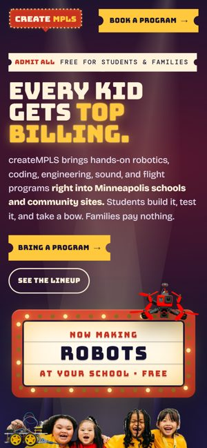

Concept 1
Top Billing
“Every kid gets top billing.”
Every createMPLS program ends in a show: a robot tournament, a listening party, a gallery walk. So the brand is a Minneapolis theater marquee where the kids are the headliners. Tickets say "Admission $0," and the logo's pointer means "right here, at your school."
- Why it works
- It's the most ownable and the most local. No youth STEM group looks like this, and it carries into events, social posts, merch and signage.
- Watch out for
- Night-time palette, so keep it warm and family-friendly. On phones, the kids need to show up on the first screen.